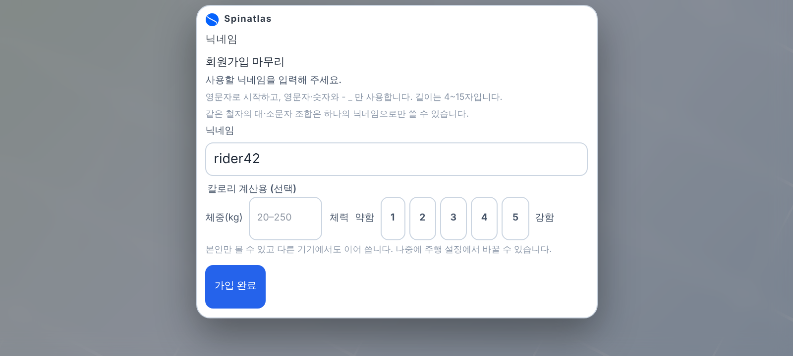
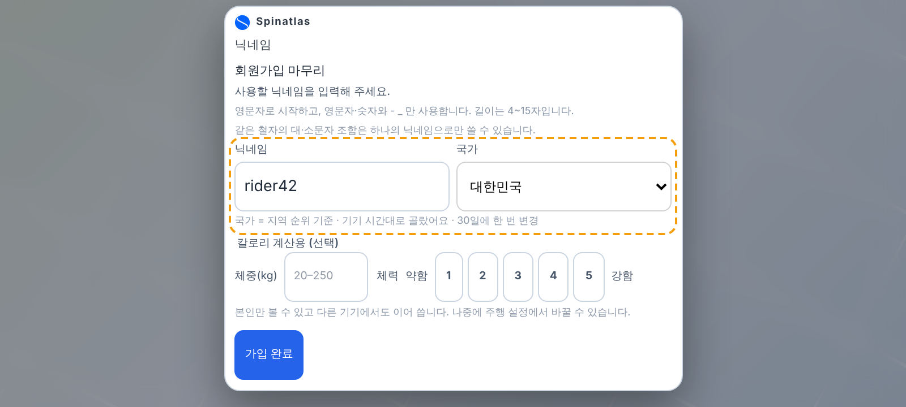
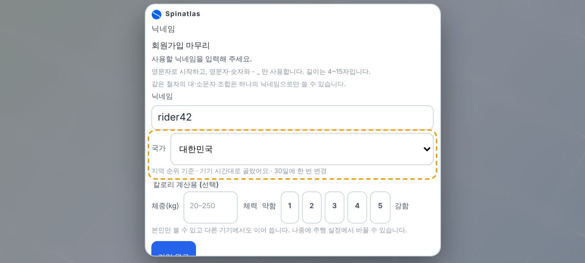
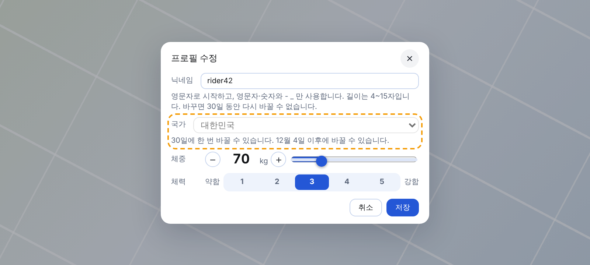
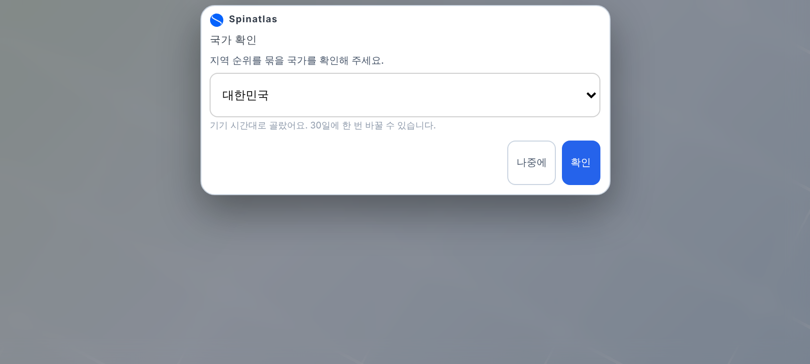

국가 입력 시안 — 폰 가로 800×360 (주황 점선 = 새로 넣는 곳)
현재 — 가입 카드스크롤 없음(카드 315px)
A안 — 닉네임과 국가를 한 줄에 (추천)스크롤 없음(339px). 국가는 기기 시간대로 미리 골라 둠, 필수
B안 — 닉네임 아래 국가 줄 따로32px 넘쳐 스크롤 생김
프로필 수정 — 닉네임 아래 「국가」 줄 (30일 잠김 상태)닉네임 줄과 같은 꼴. 게스트에게는 줄이 없음
기존 Google 사용자 — 다음 접속 때 한 번만「나중에」를 두면 그동안 전세계 순위에만 들어감(결정 필요)